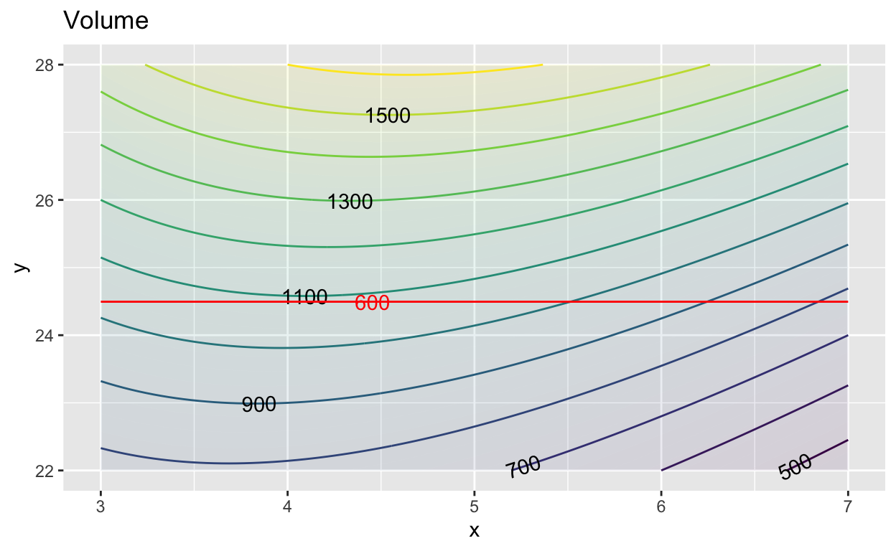
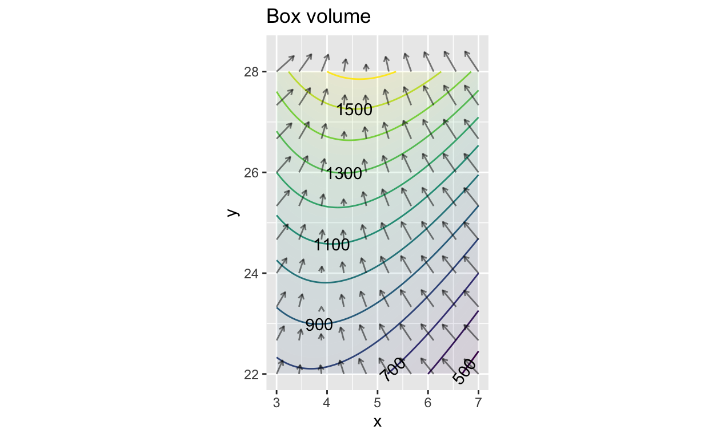
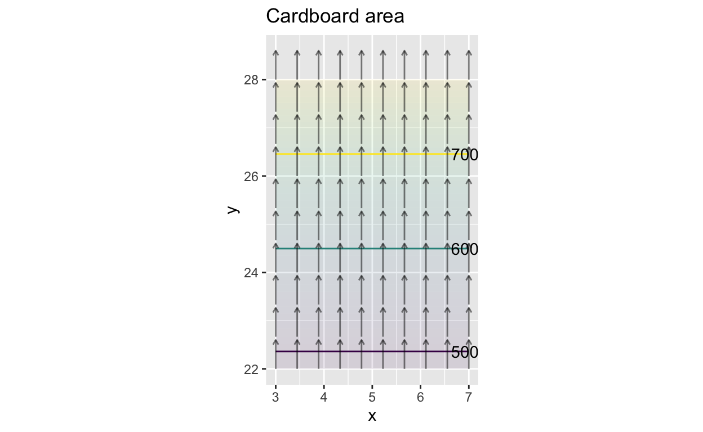
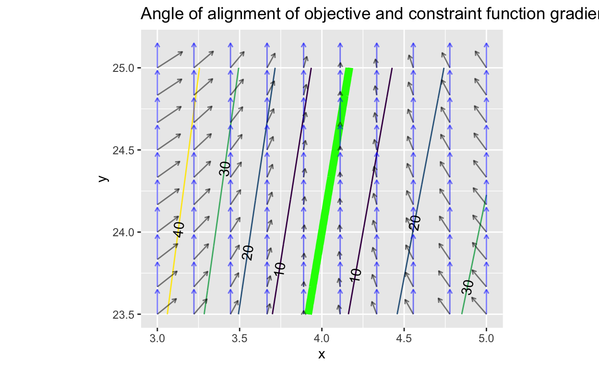
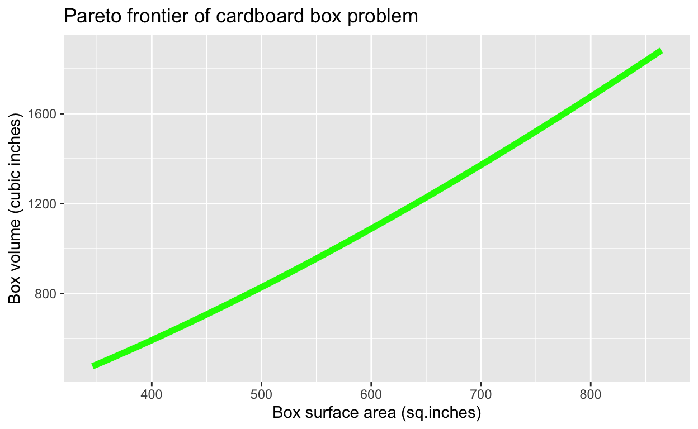

The key steps in optimization are setting up the objective function(s) and setting constraints as needed to represent the problem at hand. There are many ways to perform the work to extract the argmax once the objective function and constraints are set.
Understandably, calculus textbooks tend to emphasize techniques based on finding an input where the derivative of the objective function is zero. For problems involving multiple inputs, the task is to find an input where the gradient vector is zero.
Contemporary work often involves problems with tens, hundreds, thousands, or even millions of inputs. Even in such large problems, the mechanics of finding the corresponding gradient vector are straightforward. Searching through a high-dimensional space, however, is not generally a task that can be accomplished using calculus tools. Instead, starting in the 1940s, great creativity has been applied to develop algorithms with names like linear programming, quadratic programming, dynamic programming, etc. many of which are based on ideas from linear algebra such as the qr.solve() algorithm for solving the target problem, or ideas from statistics and statistical physics that incorporate randomness as an essential component. An entire field, operations research, focuses on setting up and solving such problems. Building appropriate algorithms requires deep understanding of several areas of mathematics. But using the methods is mainly a matter of knowing how to set up the problem and communicate the objective function, constraints, etc. to a computer.
Purely as an example, let’s examine the operation of an early algorithmic optimization method: Nelder-Mead, dating from the mid-1960s. (There are better, faster methods now, but they are harder to understand.)
Nelder-Mead is designed to search for maxima of objective functions with \(n\) inputs. The video shows an example with \(n=2\) in the domain of a contour plot of the objective function. Of course, you can simply scan the contour plot by eye to find the maxima and minima. The point here is to demonstrate the Nelder-Mead algorithm.
Start by selecting \(n+1\) points on the domain that are not colinear. When \(n=2\), the \(2+1\) points are the vertices of a triangle. The set of points defines a simplex, which you can think of as a region of the domain that can be fenced off by connecting the vertices.
Evaluate the objective function at the vertices of the simplex. One of the vertices will have the lowest score for the output of the objective. From that vertex, project a line through the midpoint of the fence segment defined by the other \(n\) vertices. In the video, this is drawn using dashes. Then try a handful of points along that line, indicated by the colored dots in the video. One of these will have a higher score for the objective function than the vertex used to define the line. Replace that vertex with the new, higher-scoring point. Now you have another simplex and can repeat the process. The actual algorithm has additional rules to handle special cases, but the gist of the algorithm is simple.
The big contribution of calculus to the process of optimization is the gradient vector. The gradient vector, as you know, points in the steepest direction uphill. Since functions can have complicated shapes, the gradient does not generally point directly to the maximum. However, if you start at a point and take a small step in the direction of the gradient, the value of the objective function will increase. Then repeat the process and keep repeating until the gradient has zero length (or close to zero).
The sandbox has instructions in R for
f <<- rfun( ~ x + y, seed=103)
dx_f <<- D(f(x, y) ~ x)
dy_f <<- D(f(x, y) ~ y)
soln1 <- integrateODE(dx ~ dx_f(x=x, y=y),
dy ~ dy_f(x=x, y=y),
x = 1, y = -3,
tdur = list(from=0, to=10, dt=0.1))
soln2 <- integrateODE(dx ~ -dx_f(x=x, y=y),
dy ~ -dy_f(x=x, y=y),
x = -2, y = 0.75,
tdur = list(from=0, to=10, dt=0.1))
contour_plot(f(x, y) ~ x + y, domain(x=c(-5, 5), y=c(-5, 5))) %>%
gradient_plot(f(x, y) ~ x + y) %>%
traj_plot(y(t) ~ x(t), soln1, color="blue") %>%
traj_plot(y(t) ~ x(t), soln2, color="red")In the code originally in the sandbox, the trajectory was constructed with 100 Euler steps; the time interval runs from \(t=0\) to \(t=10\) and \(dt = 0.1\). Practical optimization algorithms are designed to take steps that are as large as feasible. But if the steps are too large, the trajectory can overshoot the target. Dealing with this problem is a major feature of optimization algorithms and is non-trivial.
Purely to illustrate, we can investigate stepsize by changing dt in the two integrateODE() expressions.
Recall that we described a strategy for working with incommensurate objectives, that is, objectives such as “minimize money spent” and “maximize lives saved” that have no generally agreed common scale on which they can be compared. (“Mensurate” comes from the Latin for “measure.” “Commensurate” means measured on the same scale.) We call that strategy multi-objective optimization. This is by no means a magical way of pulling ethical values or human preferences out of the universe. It is instead a mathematical framework for setting up the task to quantify correctly the tradeoffs between objectives. What use one makes of this information is entirely a matter for human decision making.
The setting for multi-objective optimization is this:
The process is this:
Understanding (vi) is where your newly gained understanding of calculus comes in. Throughout CalcZ, we have encountered situations where we gradually build a solution by taking a series of Euler steps. You’ve seen this, for instance, in constructing the definite integral of a function or in finding a solution to a differential equation or by locating an argmax by taking small steps in the direction of the gradient vector.
Now, let’s examine a small but important part of the procedure for multi-objective optimization:
- You, the decision maker, select one of the objective functions to be the objective function. Mathematically, it doesn’t matter which one.
Although we may think of objective functions and constraint functions as different kinds of things, the way they are used in constrained optimization gives them symmetrical roles.
In earlier exercises, we’ve looked at step (iii) in the multi-objective optimization procedure graphically, as in this diagram depicting as an objective function the volume of a cardboard box and depicting as a constraint the surface area of cardboard used in the box.

The constraint path is the contour of the constraint function at which the output of the constraint function is the set level; here that’s 600 square-inches of cardboard.
The argmax in this problem is the point at which the constraint path is tangent to a contour of the objective function. Here, we need to interpolate visually and imagine the contour where the objective function output is about 1100, which will be tangent to the constraint path at about \(x=4.2\).
Let’s take the graphic apart into it’s constituent components: the objective function and the constraint function. We’ll plot both in the same way: a contour plot with the gradient field superimposed.

As always, at any point the gradient vector is perpendicular to the contour through that point. This means that wherever the contour of one function is tangent to the contour of the other function, their respective gradient vectors are exactly aligned.
The next plot shows the gradient vectors of each function along with the angle (in degrees) between the gradient vectors at each point. Along the green line, the gradient vectors are exactly aligned.

Note that nowhere in the construction of the green line have we said anything about which of the two functions is the objective and which is the constraint. The two functions are used in exactly the same way: find the gradient and find the points where the two functions’ gradients are aligned. It doesn’t matter which function we choose to call the contraint and which the gradient.
Each point on the green line is an input \((x, y)\) that is optimal at some level of the constraint. Imagine taking points on the green line and, for each point, calculating the box volume and the box surface area. These points are each on the Pareto frontier of the multi-objective optimization problem. That is, there are no values of \(x\) and \(y\) off the green line that dominate a point on the green line in terms of the values of the box volume and the box area.

An application to machine learning: Large chunks of the field of machine learning consist of relating some outcome to be predicted as a function inputs that can be measured. A discrete example: predict what animal is depicted in a photograph as a function of the million-or-so pixel values. A continuous example: Find the probability of a person getting a disease as a function of measurements of expression level of each of thousands of genes.
In both cases, a starting point is the collection of a large amount of data, e.g. photographs with various animals in them that have been labeled by some expert; or genetic measurements from people who did and did not come down with the disease. In both cases, the outcome of machine learning is a function that gives an output (which animal? came down with disease?) as a function of the inputs.
One objective in finding the function is to make the results as close as possible to the data: the function should give the right answer as often as possible. But there is another objective: keep the model simple. The optimal model choice involves a trade-off between these two objectives. Techniques for model construction in machine learning therefore involve two objective functions: the probability of a correct output and the complexity of the model (as measured, for instance, by the length of the \(\mathbf x\) vector found when solving the linear combination target problem). In statistics, this is called the trade-off between variance (how close the model is to the data) and bias (how far the \(\mathbf x\) vector is from the one we would get by ignoring the objective to keep the model as simple as possible).
You are a member of a health-care oversight committee that allocates funds for investment in health-care facilities. The committee has two proposal before it and needs to decide how best to spend the available $50M budget:
Experts have evaluated each proposal in terms of different cost options and the impact that each will have on health outcomes. Following a standard epidemiological method, the impact is estimated in terms of “Quality Adjusted Life-Years” (QALY), a measure that combines the number of people affected, the number of years of prolonged life, and the improvement in quality of life for those treated.
The expert estimates are available in the data frame QALY_impact:
QALY Impact of the Proposals
QALY_impactSuch estimates from experts should be taken with a grain of salt, but they are often the best information you have to inform a model.
You can turn the expert’s opinions into functions by using splines. In this case, there is good reason to think that output will increase monotonically with expenditure, so a monotonic spline is a good choice. The functions were created using these commands and are already available in your sandboxes:
The problem is to find the best values for expenditures on Proposal A and B — call these expenditures \(x_A\) and \(x_B\) – given constraint that total expenditure is \(x_A + x_B = 50\).
A simple approach is to plot out the total benefit as a function of expenditures on each of A and B:overall <- makeFun( fA(xA) + fB(xB) ~ xA + xB)
g_budget <- makeFun(xA + xB ~ xA + xB)
contour_plot(overall(xA, xB) ~ xA + xB,
domain(xA=range(0,50), xB=range(0,50))) %>%
contour_plot(g_budget(xA, xB) ~ xA + xB, filled=FALSE,
contours_at=NULL, contour_color="red", alpha=0.5)How can you confirm that the red contours in the plot genuinely represent the budget constraint at the indicated level?
Another way to look at the problem is to find the total QALY outcome as a function of the amount \(x_A\), recognizing that once \(x_A\) is set, the remaining money will go to option B, so \(x_B = 50-x_A\). The following sandbox makes the plot.
slice_plot( fA(xA) + fB(50-xA) ~xA, domain(xA = c(0,50)))Changing the Budget
A broader social question is whether the budget is being set at an appropriate level. One way to examine this is to look at how the QALY outcome changes as the budget changes.
For this, we’re going to find the set of non-dominated solutions, that is, all the values of \(x_A\) and \(x_B\) at which the derivatives \(\partial_{x_A} f_A()\) and \(\partial_{x_B} f_B()\) are equal.
The following sandbox shows the difference between those two derivatives along with a bunch of different constraint paths.
dfA = D(fA(xA)~xA)
dfB = D(fB(xB)~xB)
contour_plot( dfA(xA) - dfB(xB) ~ xA&xB,
domain(xA=range(0,50), xB=range(0,50)),
contours_at = c(-2, -4, 0, 4, 2), skip=0) %>%
contour_plot(xA + xB ~ xA + xB, contour_color="red", skip=0)Yet another constraint!
Location: CalcZ/_DailyDigitals/DailyDocuments/inst/142Z-Daily-digitals/DD-142Z-37/142Z-DD-37.Rmd DD-142Z-24